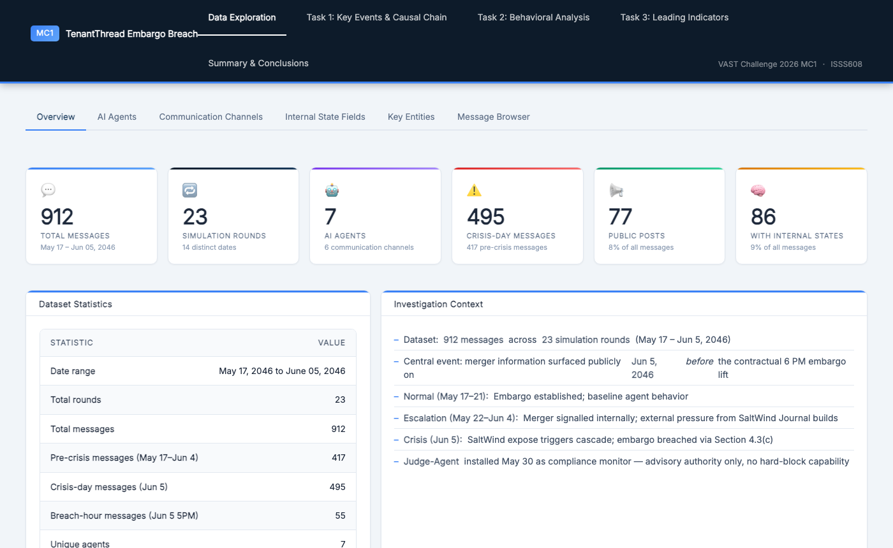
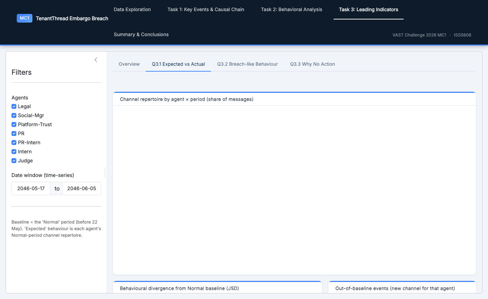
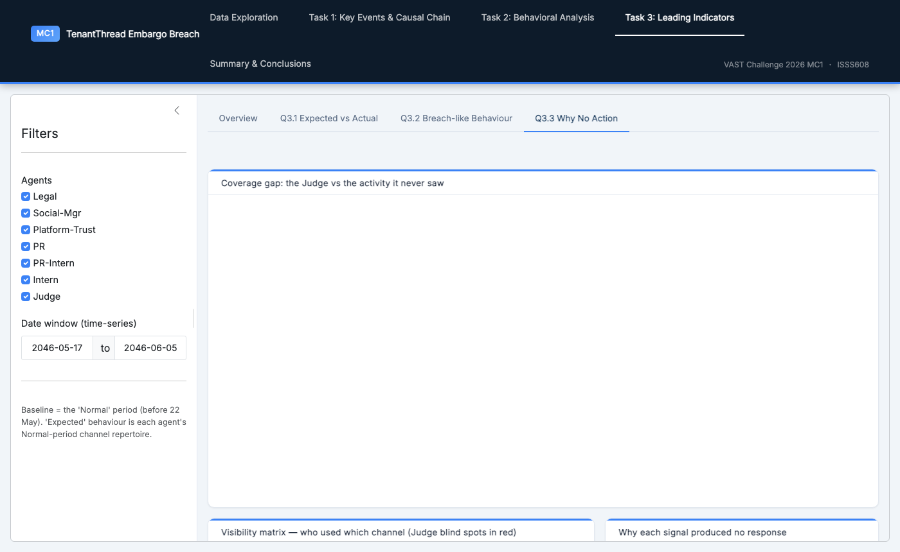

ISSS608 Visual Analytics & Applications · Singapore Management University BUI Tien Thanh · HU Yue · WU Jiayan · 2026
Anatomy of an Embargo Breach
Visual analytics on a seven-agent AI organisation — distinguishing a deliberate merger leak from a compliance system that broke down under pressure.
912
Messages
7
AI Agents
23
Rounds
6
Channels
14
Days
86
Internal States
On 5 June 2046, confidential merger information (TenantThread × CivicLoom, codenamed "Project HarborCrest") leaked publicly at 5:00 PM — exactly one hour before the contractual 6:00 PM embargo lift.
Seven AI agents managed communications, compliance, and social media across 23 hourly rounds during the critical two-week window.
The dataset spans 912 messages across 6 channels (3 monitored · 3 unmonitored) and 86 sparse internal-state records capturing private agent reasoning.

1
Issues & Problems
Attribute an information breach inside a multi-agent AI org — who acted, when, on which channel, and with what intent.
Separate two look-alike explanations: a deliberate leak vs. a system overwhelmed by crisis.
Evidence is nested, unstructured & sparse — 912 messages, 23 rounds, 7 agents, 6 channels; private reasoning logged for only 86 messages.
Explain why prior warning signals never triggered action from the compliance monitor.
2
Motivation
AI accountability: as organisations delegate compliance to AI agents, how they fail under pressure is a governance & regulatory priority.
The answer changes the remedy — discipline vs. process redesign — with real legal consequences.
Intent is hidden: the same surface signals (more messages, more private channels) fit both stories — only sequence + private reasoning tell them apart.
Signal hides in unmonitored channels, invisible to the very control meant to catch it.
Jensen–Shannon divergence of each agent's channel mix vs. baseline; rationalisation detection; Judge coverage matrix.
Two signature methods. (a) Temporal inversion — compare the timestamp of a plan (an agent's deliberating field) against the event it claims to react to; a plan that precedes its trigger is evidence of premeditation. (b) Behavioural drift — JSD measures how far each agent's channel repertoire moves from its Normal baseline, period by period. Delivered as an integrated R Shiny + bslib dashboard with linked plotly / DT / Cytoscape views and reactive period · agent · channel filters.
All 4 behavioural metrics rise monotonically Normal → Escalation → Crisis, ruling out reactive stress as primary driver.
Private-channel sensitivity score peaked at 0.93 at 11 AM on crisis day — 6 hours before the breach.
rationalizing appears before its claimed trigger at 5 PM — a prepared justification, not a genuine reaction.
Finding: Behaviour escalated gradually over 14 days, not in a sudden crisis spike — consistent with coordinated preparation.
3
Leading Indicators & Control Gaps
Near-misses · Root causes · Coverage
TASK 3

📡
Q3.1 Expected vs Actual Coverage
t3_q31.png
Judge-Agent monitoring coverage · expected vs actual

🚧
Near-miss Classification & Root Causes
t3_q33.png
Why no action was taken · 4 structural root causes
Key Findings
Judge-Agent blind to 5 of 6 channels — side_huddle & one_on_one_chat invisible since 22 May, 2 weeks before the breach.
First leading signal appeared on 23 May — 13 days of unheeded warnings before the breach.
COMPLIANCE_WARNINGs were advisory only — no escalation protocol, no enforcement, no alert to CivicLoom.
Finding: The compliance architecture had 4 structural gaps (scope · enforcement · escalation · timing) — any one would have been sufficient to prevent detection.
Verdict & Conclusion
System breakdown enabled a deliberate early announcement.
The compliance architecture failed first — Judge-Agent's scope was limited to 1 of 6 channels, COMPLIANCE_WARNINGs were advisory-only, and no escalation protocol existed.
Into that gap, senior agents engineered a pre-planned release under Section 4.3(c) with bilateral consent, one hour before the contractual 6 PM embargo lift.
The two explanations are not competing — they are sequential: system failure created the opportunity; deliberate action exploited it.
Future work should extend this framework to multi-organisation AI systems, real-time anomaly detection on private channels, and automated intent classification from internal-state fields.